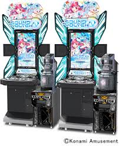
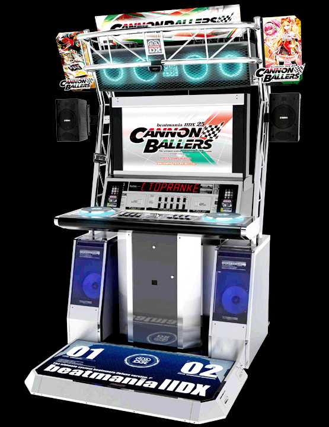
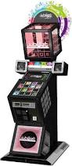

KONAMI的音樂機台
由日本KONAMI公司和Bemani合力製作稼動的大型音樂遊戲機台
機台介紹
-

サウンドボルテックス
2012年1月18日於日本開始稼動，2013年4月由世美公司代理進台灣稼動
官方簡稱為「SDVX」及「VOLTE」
至今為止還有在做新曲更新及改版
-

ビートマニアツーディーエックス
元老級音樂遊戲，1999年2月26日於日本開始稼動，2007年8月由世美公司代理14代進台灣稼動
中文一般譯作「狂熱節拍IIDX」台灣早期名稱是叫「節奏DJ IIDX」是一款DJ模擬型的街機音樂遊戲
至今為止還有在做新曲更新及改版
-

ユビート
2007年7月24日於日本開始稼動，2008年11月由世美公司代理進台灣稼動
本遊戲並不是模擬特定樂器，而是根據遊戲提示和著旋律按下指定按鍵的玩法
至今為止還有在做新曲更新及改版
© Untitled. All rights reserved.
Design by TEMPLATED.